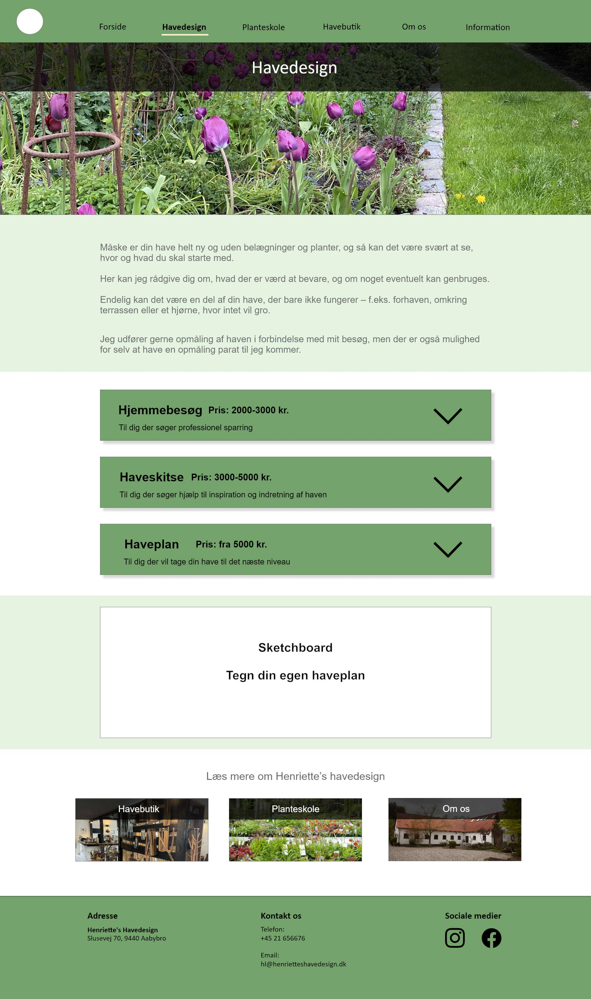

Henriette's Havedesign hjemmeside
Henriette's Havedesign er en virksomhed der specialisere sig i plantedyrkning og anlægning af have til private. Særligt større planter og træer er deres primære produkter.
Casebeskrivelse
Projektet var en del af en eksamen i avancerede brugergrænseflader, hvor vi selv skulle finde eksterne samarbejdspartnere med etablerede virksomheder. Udfordringen lå derved i at indfri en løsning som passede til virksomhedens behov. Derudover var udviklingsmetoden fri, hvorfor denne løsning er lavet i WordPress.
Henriette's Havedesign er en fjerntbeliggende planteskole / havebutik, som kommunikere med kunderne primært over de sociale medier. Gennem kundemøde og indledende brugerundersøgelser, blev der identificeret behov og krav til projektets målsætning.
Takeaways
At arbejde med WordPress som CMS har givet indsigt i moderne metoder til at skabe fleksible digitale løsninger til rigtige kunder. Forud for projektet havde jeg ikke det store kendskab til hvordan WordPress fungerede. Dette har ændret sig markant, til en grad hvor jeg føler mig komfortabel med at fuldføre et projekt via denne platform. Til fremtiden vil jeg også gerne se mere ind i custom themes og andre block editors som Elementor eller Gatsby.
Designprocessen
Gennem det indledende kundemøde, blev ønsker fra virksomhedens side kortlagt og taget med videre i designprocessen. Da de primære produkter beskæftiger sig med private haver, ville en visuel identitet som afspejlede dette give mening. For at skabe et overblik over det nødvendige indhold, udarbejdede vi et sitemap over hjemmesidens forventede struktur, baseret på indledende sketches.
Designprocessen var i høj grad iterativ og byggede på mange genovervejelser omkring layout og indhold. Dels fordi det er en branche som er forholdsvis ny, men også fordi vi gør brug af WordPress som realiseringsværktøj. Der er mange overvejelser omkring implementeringsmuligheder af de designs vi finder på undervejs, da kendskabet til WordPress på dette tidspunkt er sparsomt.
Accordions blev implementeret gennem et plugin og efterfølgende styled med custom css. Sketchboarded er på dette tidspunkt et bud på mere brugerinteraktion, men blev kategoriseret som en "nice to have" til fordel for mere tid til udvikling af den resterende hjemmeside.
Mockups og Prototyping
WordPress kommer med mulighed for at anvende plugins. Dette blev til et punkt for overvejelse under prototyping, da kendskabet til implementeringen stadig er forholdsvis sparsom. Istedet blev fokus for udviklingen drejet mod implementering af simpel, men meningsfuld funktionalitet og det visuelle indhold prioriteret højt.
Forsiden bliver prioriteret, da forbedringer til virksomhedens kommunikation med kunderne til fordel kan integreres, med links til sociale medier og et indbygget facebook feed.
En stor del af udviklingen blev efterfølgende at finde funktionelle plugins, som kan øge interaktionen mellem brugeren og hjemmesiden til fordel for virksomheden.
Realisering
Løsningen blev bygget med WordPress som CMS. WordPress passede til denne opgave, da iterationer til hjemmesidens layout og indhold bør matche virksomhedens skiftende sortement. Henriette's Havedesign er i høj grad sæsonbaseret når det kommer til deres produkter, hvorfor et system som WordPress kan skære ned på manuel maintenance.